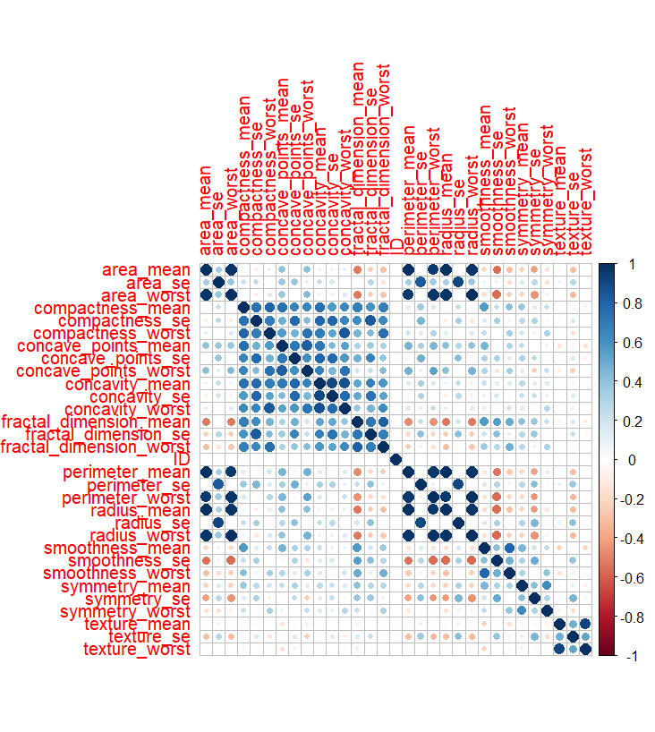
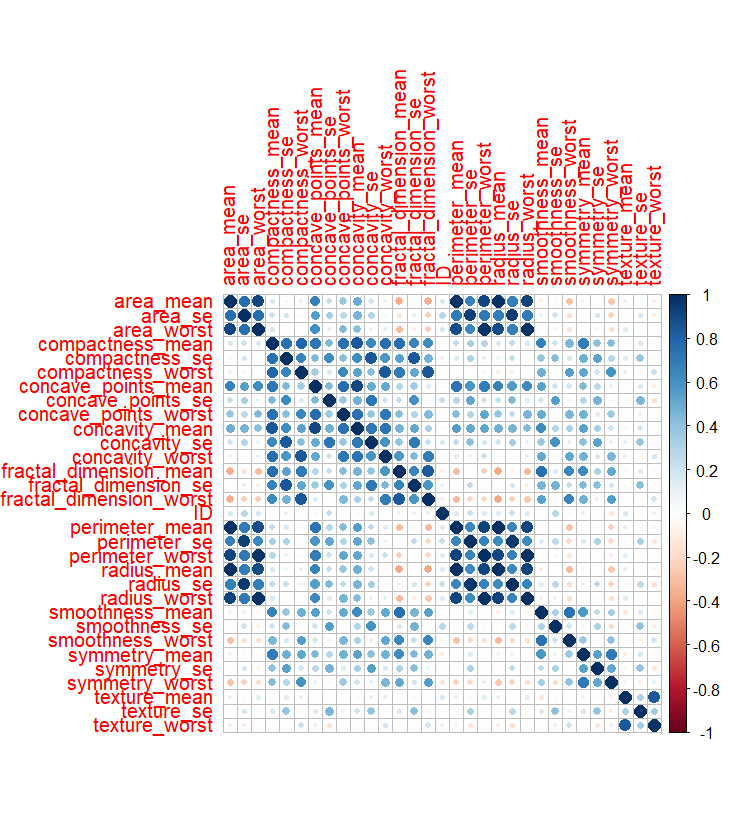
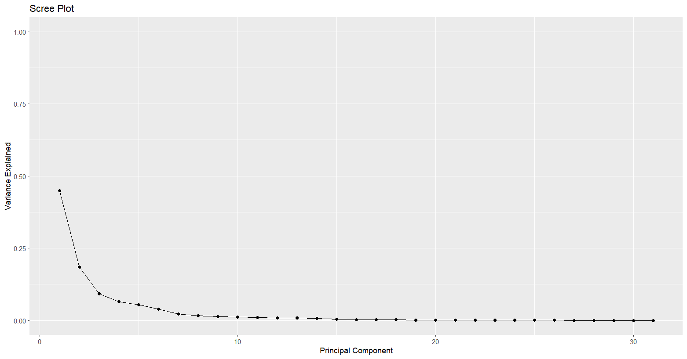
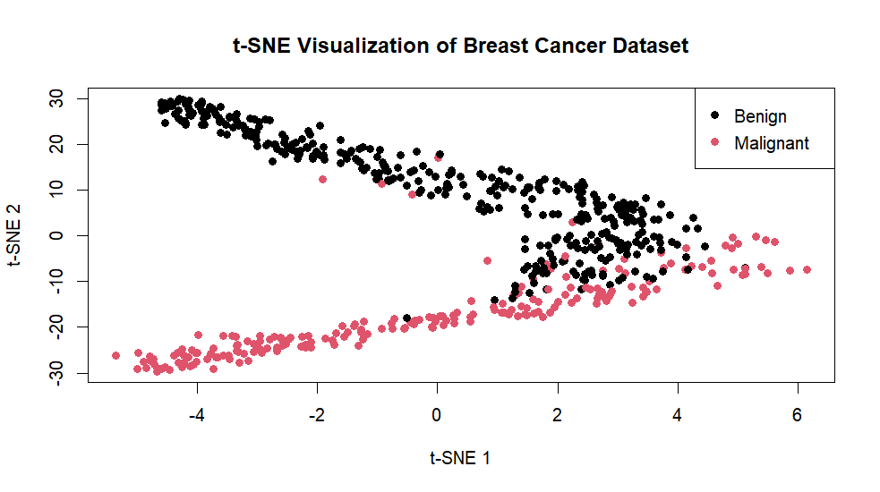

With only 569 cases and 30 features, the EDA processes included Correlation Matrices, Linear Discriminant Analysis, Quadratic Discriminant Analysis, Principal Component Analysis, and T-Distributed Stochastic Neighbour Embedding.
The purpose of this project was to gain a basic understanding of which variables are most important in determining whether cancer is malignant or benign. To identify these key variables, two binary classification models—Linear Discriminant Analysis (LDA) and Quadratic Discriminant Analysis (QDA)—were employed.
To gain a more in-depth understanding of the importance of various variables, Principal Component Analysis (PCA) and T-Distributed Stochastic Neighbour Embedding (t-SNE) were utilised.
Technologies: Various packages were used
throughout this Exploratory Data Analysis of the Breast Cancer Wisconsin
data, including corrplot, readODS,
dplyr, tidyverse, MASS,
ggplot2, and Rtsne.
Methods: It is important to note that some
columns from the original dataset were modified. The ID number was
removed as it did not provide additional benefit to the EDA, and the
diagnosis column was converted to a binary column, where malignant was
classified as 1 and benign as 0. This binary column is referred to as
cancer in the modified dataframe. The cancer
variable was the dependent variable for the EDA processes.
This project involved creating Correlation Matrices to recognise which variables have the strongest correlations with others.
To perform LDA, the variables were scaled to have a mean of 0 and a
standard deviation of 1. The means and standard deviations of the scaled
variables were computed. For both LDA and QDA, the data was split into
70% for training and 30% for testing. The model was trained using the
70% training dataset, with the cancer variable as the
response variable. This trained model was then tested using the 30%
testing dataset, and the accuracy was calculated by comparing predicted
versus actual class labels.
QDA followed similar processes, with the exception that the variables were not scaled, nor were their standard deviations or means computed. The model was trained using a 70% training and 30% testing split. As with LDA, the model was trained using the training dataset and tested using the same processes as LDA.
Principal Component Analysis involved scaling the variables in the
same way as in the LDA processes. The results and scores were then
multiplied by -1 to adjust the direction of the principal components.
The data was explored in descending order, and the results were
calculated. These results represent the proportion of variance explained
by each principal component. Each of the standard deviations of these
principal components was squared to calculate the variance of each
component. The proportion of variance explained is captured in the
variable var_explained.
The t-SNE algorithm involved selecting all variables except for
cancer as it was the dependent variable. Two dimensions,
benign and malignant, were used, with a perplexity of 50. This
perplexity relates to the number of nearest neighbours when computing
the similarities between data points, balancing the local and global
aspects of the data. Using the maximum number of iterations at 1000
allows the algorithm to train and converge effectively. With a
perplexity of 50 and a maximum of 1000 iterations, the model was trained
over 20 epochs. With each epoch, the model’s error decreased
accordingly. This process was visualised in a two-dimensional plot,
separating benign and malignant cases.
Analysing the correlation matrices, it is evident that variables plotted against themselves diagonally result in a correlation of 1.0. In the benign correlation matrix, some variables are highly correlated, such as compactness, concave points, concavity, and fractal dimensions. Additionally, variables related to similar subject matters, such as area and perimeter, also show strong correlations. The malignant correlation matrix follows a similar pattern, with even stronger relationships between variables.
Through comparative analysis of LDA and QDA, both models show specific differences but can be compared in terms of overall accuracy. LDA produced an accuracy of 94.5% on the testing dataset, while QDA achieved an accuracy of 95.3%. Both models used an estimated 70% training and 30% testing split, which is standard practice. Interestingly, both models showed similar prior probabilities in detecting whether a cancer case was malignant or benign, at approximately 65% for benign and 35% for malignant.
In LDA, the radius_mean for malignant cases is -0.5568,
while for benign cases it is 0.9787, indicating that, on average,
radius_mean is higher in malignant cases compared to benign
cases. In terms of coefficients, radius_worst has the
largest positive coefficient of 5.7927, strongly influencing the
classification of whether the cancer is malignant or benign. To a lesser
degree, perimeter_mean also influences the classification
of cancer cases, with a coefficient of 3.7534.
Analysing the group means for QDA, the radius_mean for
benign cases is 12.1141, whereas for malignant cases it is 17.12036,
indicating that radius_mean is larger for malignant cases
than for benign cases. Other group means, such as
texture_mean, show slightly higher values for malignant
cases (21.60877) compared with benign cases (17.92915). The variables
perimeter_mean, area_mean, and
area_se are the most extreme examples.
In summary, comparing LDA and QDA using the Breast Cancer Wisconsin (Diagnostic) dataset, QDA performs slightly better, indicating that the data is not perfectly linear. The difference in performance is minimal, and it is possible to improve the overall accuracy of both models. However, doing so could increase the likelihood of overfitting.
Through the use of Principal Component Analysis, correlations between the original dataset are analysed. Unlike the correlation matrices, PCA is not susceptible to multicolinearity, and is capable of capturing the greatest variation among the dataset. Inspecting the results, with PC1 having the greatest variation among all of the Principal Components, it is clear to see that the greatest variation is in the radius_mean, perimeter_mean and area_mean with values of 0.2163, 0.2245 and 0.2179. In conjunction with this, PC2, second to PC1, explains other variation not covered by PC1 such as smoothness_mean and compactness_mean with values of 0.1887 and 0.1547. These findings are further explained through the use of the Scree plot below.
The results from the t-SNE algorithm reduced the overall error from 49.1515 at the beginning to 0.1687 at the end. The total time taken for this algorithm to fit and train the model was 1.39 seconds, indicating that it is computationally efficient. This is likely due to the relatively small dataset, despite the large number of variables. Interestingly, there is some overlap between data points, meaning that in some instances where cancer is malignant or benign, there may be some uncertainty.
Correlation Benign Heatmap: 
Correlation Malignant Heatmap: 
Scree Plot: 
T-Distributed_Stochastic_Graph: 
Some of the sources used for reference are from the website https://www.statology.org/. For the particular code used in this project, please feel free to access the following github repository https://github.com/NathanielPyle/NathanielPyle.github.io.